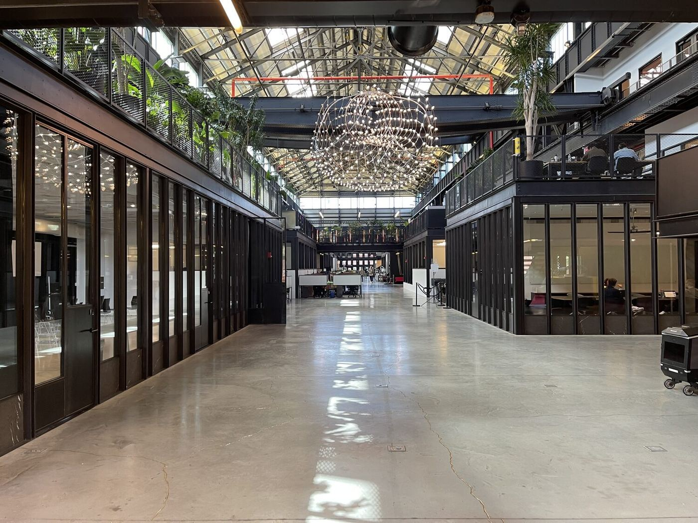
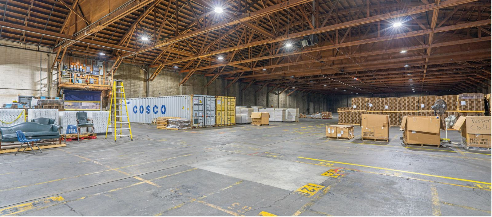
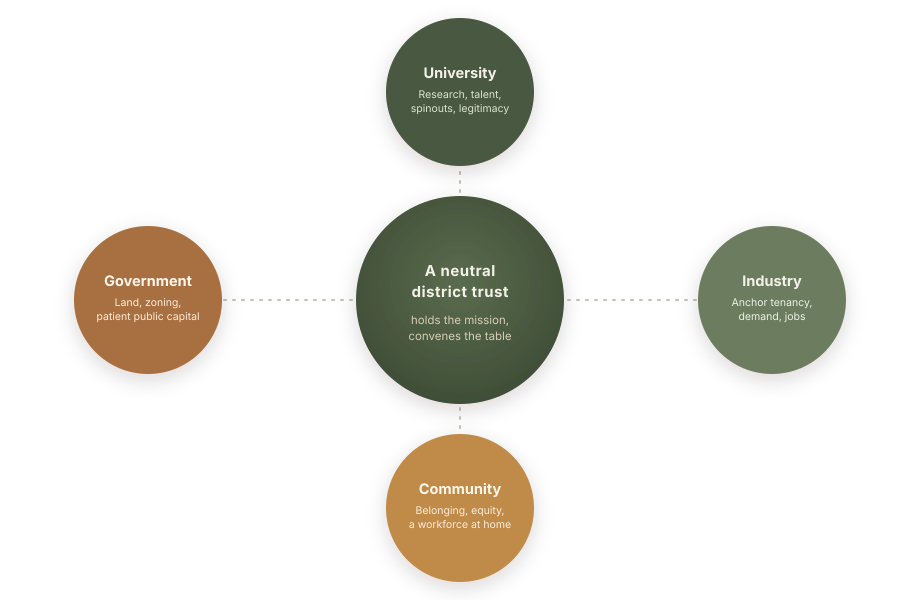
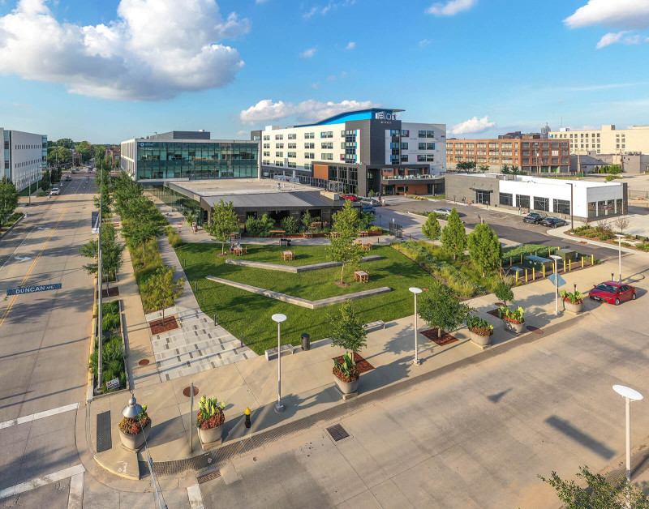
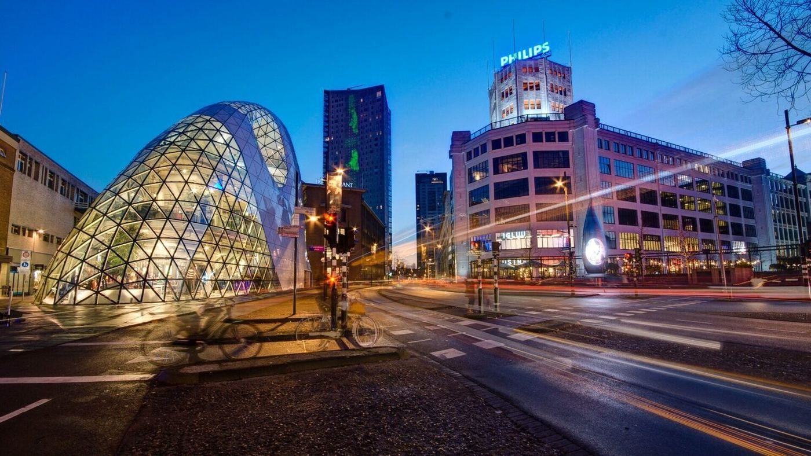
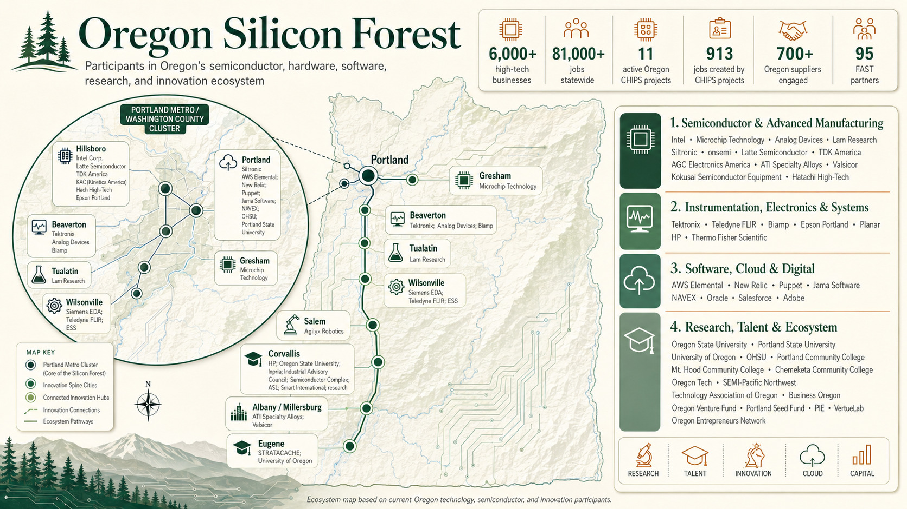
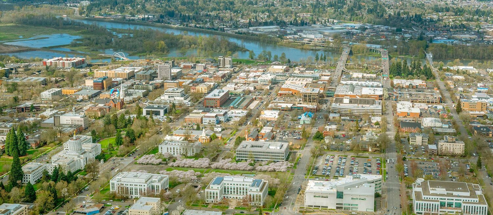
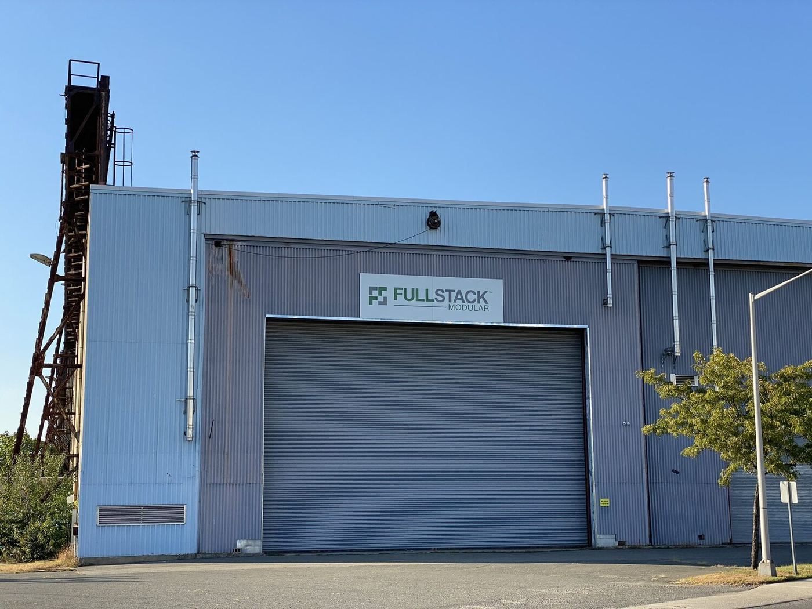

This site is shared with project stakeholders for discussion purposes. Enter the access code to continue.
Need access? Contact erik@nowcitylabs.com
An applied-technology district taking shape on the Willamette riverfront, built the way the world's great districts are built: by a coalition.
Edgewater is a place where people will live, work, and make things side by side. At its heart sits an innovation district: a working community where founders, engineers, researchers, and makers build applied technology in the open, on a real riverfront, among the neighbors who live there. Now City is convening it, and the path is well understood. The world's most admired districts share a common origin story, and this page tells that story, then shows how Salem writes its own chapter.
Great districts are built by coalitions: a university, a government, an industry, and a community, brought together around one shared place and held by a neutral trust.
The clearest picture of what Edgewater becomes is Newlab: a venture and maker community for hard technology, housed in one rehabilitated industrial building inside a much larger working campus. It gives hardware founders three things that are hard to find alone, infrastructure to prototype, real projects to pilot, and a pathway to capital, and it sits inside a city-owned industrial yard run for jobs and belonging. That nested shape, a curated maker building inside a mission-run campus, is exactly the shape Edgewater takes.


Founded in 2016 by David Belt and Scott Cohen, modeled on the MIT Media Lab, inside Building 128, an 1899 Navy machine shop reborn as roughly 84,000 square feet of studios, labs, and a full fabrication shop, metal, wood, 3D printing, electronics, and CNC.
A public landlord owned and rehabbed the shell; a private operator brought the vision and the curation. The roughly $82.8M Building 128 project drew $25M of New Markets Tax Credits alongside historic tax credits, federal, state, and city grants, and private capital. A coalition built it.
Shared tools, a curated community, and real-world pilots build on each other. Newlab reports more than 300 member startups and over 1,000 members across its locations, and has opened a second hub at Michigan Central in Detroit with Ford. The model travels.
Look closely at the world's great innovation districts and the same structure appears again and again. Four partners come together, a university, a government, an industry, and a community, and a neutral entity holds the mission so that no single party has to own it. This is the well-tested pattern often called the triple helix, with the community as a fourth strand. The diagram below is the shape; the case studies that follow are the proof.

Each partner brings something the others cannot. A neutral trust, a foundation or nonprofit, holds the mission and convenes the table.
Research, talent, spinouts, and the credibility that draws the others to the table.
Land, zoning, redevelopment and tax-increment tools, and patient public capital.
Anchor tenancy, real demand, jobs, and private investment alongside the public stack.
Belonging and shared prosperity, seated from the start so the district lifts the neighbors around it.
These places began the same way Edgewater begins: a champion convened partners, a neutral entity was formed, an anchor and a public tool arrived together, and a community was kept close. The closest match to West Salem is the first one.

Five anchor institutions, Washington University, BJC HealthCare, Saint Louis University, the University of Missouri-St. Louis, and the Missouri Botanical Garden, came together in 2002 after a university chancellor visited Kendall Square and brought his peers along to see it. They pooled roughly $29 million, formed a single nonprofit master developer, and paired it with Missouri's redevelopment and tax-increment financing powers to transform a brownfield into a district. The lesson for Salem is direct: a handful of anchors, modest pooled equity, one neutral nonprofit, and a public financing tool are enough to begin.
Visit Cortex ↗
A mayor, a university president, and a chamber-of-commerce president convened a standing partnership and held it in the Brainport Foundation. The region became home to ASML, one of the world's most valuable technology companies.
The City of Stockholm and Ericsson created a neutral foundation in 1985; its first act was a single shared building that put KTH university labs next to companies under one roof.
In 1984 the Flemish government funded a neutral research institute spun out of KU Leuven. Because no single company owns it, the world's rival chipmakers all fund it and use it.
The city and its publicly owned utility created an innovation corporation funded by utility dividends, and seated citizens as a full partner. The district became central to the city's celebrated transformation.
The State of Berlin relocated Humboldt University's science faculties physically onto the site, then grew a science city of around 1,000 companies and 16 research institutes around them.
The city rezoned 200 hectares of old industrial Poblenou for knowledge work and recycled the value uplift into public infrastructure, drawing three universities and 1,400-plus firms.
In 1970 a Cambridge college committed its own land and endowment on a multi-decade horizon, seeding a cluster that now spans thousands of knowledge companies.
The state developer built the district and moved national research institutes in first, beside the National University, giving the place day-one gravity.
Duke, UNC, and NC State, with the governor and business leaders, placed the district in a neutral private nonprofit, chosen deliberately so rival universities could cooperate and the effort could move at private speed.
MIT acted as a deliberate developer of land it had long held, winning a city upzoning and building one of the densest innovation clusters in the world next to its own campus.
A university-backed nonprofit joined a specialist developer and an institutional capital partner in a joint venture, splitting mission from execution cleanly.
These districts turned a single rehabilitated building and a coalition into thousands of jobs and billions in investment. Edgewater is smaller and earlier, so the honest exercise is to scale their proven ratios down to Edgewater's size: a roughly 120,000 SF maker building inside a 22-acre riverfront neighborhood. The figures below are illustrative, anchored to what comparable places actually achieved, not a forecast.
Edgewater gives a real and growing innovation corridor a front door on the river. Oregon's Silicon Forest is one of the country's deepest technology ecosystems, more than 6,000 high-tech businesses and 81,000 jobs, running from Intel and the semiconductor cluster around Portland through instrumentation, software, and research talent up and down the Willamette. Salem sits squarely on that corridor, already home to a world-first advanced-manufacturing plant, and the district gives the valley a place to gather.

Agility Robotics' RoboFab in Salem is described as the world's first purpose-built humanoid-robot factory, around 70,000 SF, designed to scale beyond 10,000 robots a year and 500-plus jobs. The company, an Oregon State spinout, closed a $400M round in March 2025.
Oregon State leads two federally designated Tech Hubs, in semiconductors and in mass timber, among the few universities in the country to hold two. The research engine for an applied district sits 35 miles south.
Oregon's mass-timber sector, the OSU and University of Oregon TallWood Design Institute, and the Port of Portland's timber manufacturing campus show a region turning industrial waterfronts into clean-construction innovation. Edgewater joins that map.
A district earns its identity by owning a theme, and Salem sits in one of the most agriculturally diverse regions on earth. The Willamette Valley grows more than 220 commodities; Oregon is the world's grass-seed capital and grows 99% of America's hazelnuts; nursery and greenhouse stock alone is a $1.2 billion industry. The opportunity is a hub that bridges urban innovation and the rural valley, so the technology, the processing, and the markets get built close to the people who farm.

Oregon State already runs precision-ag field trials on the valley's signature crops, including an AI plant-by-plant weed-control study in grass seed with the Swiss firm Ecorobotix, and has built orchard robotics for years. Oregon's ag-tech strength is research-rich and startup-light, which is exactly the gap a district can fill: a place to develop, prototype, and demonstrate precision ag, controlled-environment growing, and ag robotics, with real fields minutes away.
The OSU and Oregon Department of Agriculture Food Innovation Center in Portland shows the model: shared product development, pilot processing, food safety, and market access that carry a grower's crop to a shelf. A West Salem hub can bring that closer to the farms, with shared commercial kitchens, value-added and co-packing space, and aggregation, fundable through Oregon's Resilient Food Systems Infrastructure grant.
The mid-Willamette Valley is home to one of the largest agricultural workforces in the country, more than 40,000 farmworkers, and to deep-rooted organizations like PCUN in Woodburn. A district that connects urban innovation to rural producers and to that workforce can widen the opportunity it creates rather than concentrate it.
Chemeketa's Northwest Wine Studies Center, with an eight-acre teaching vineyard and a working estate winery, sits in West Salem itself. OSU Extension reaches every Oregon county, SEDCOR organizes the region's food and beverage economy, and the Oregon State Fair makes Salem the state's agricultural showcase. The pieces of a food and ag hub are already in the neighborhood.
Every role in the playbook has a strong Oregon partner ready to fill it. The table maps each strand of the coalition to the institution best placed to play it, and why that fit is credible today.
| Role in the playbook | Best-fit partner | Why it fits |
|---|---|---|
| Research anchor | Oregon State University | Two federal Tech Hubs (semiconductors and mass timber) and the Agility Robotics lineage, mass timber especially suited to an adaptive-reuse maker building |
| In-town university | Willamette University | An academic, talent, and entrepreneurship presence in Salem itself, and civic legitimacy at the table |
| Workforce & training | Chemeketa Community College | Applied skills and the Small Business Development Center, the pipeline that fills the jobs the district creates |
| Government & land | City of Salem & Urban Renewal Agency | The Riverfront-Downtown Urban Renewal Area, Salem's own value-capture and tax-increment tool |
| State | Business Oregon | State incentives and the channel that aligns the district with the OSU-led federal Tech Hubs |
| Regional convener | SEDCOR | The Mid-Willamette Valley's public-private economic-development table, already linking employers, training, and capital |
| Anchor employer | Salem Health and regional employers | A large anchor institution able to take founding tenancy, in the role health systems played at Cortex |
| Community | West Salem neighborhoods & tribal partners | Seated from the start so the district and its homes lift the people already here |
The precedents agree on the sequence. Start with a credible champion, see a working district together, form the neutral trust, land the anchor and the public tool as a pair, and prove it with one building. Each step makes the next one easier.
Bring an Oregon State and a Willamette leader to co-convene, so the effort reads as a research and civic initiative from day one.
Take the City, the universities, the State, and an anchor employer to a working district, Newlab and Cortex, to align on one shared model.
Charter a neutral district nonprofit that all can join and the community sits on, alongside Now City as the developer.
Land an anchor presence in the maker building together with the Riverfront-Downtown urban-renewal financing.
Open the bow-truss maker building and its founding cohort, the first visible win that draws the rest.
The 400 Patterson campus is three 40,000 SF bow-truss warehouses on the riverfront, the kind of raw, high-bay industrial structure that maker districts are built inside. The Activation Plan already brings these back to life as live-work and innovation space under a patient operating-to-property structure. The Innovation District gives that move its purpose: the bow-truss campus becomes the curated maker and venture building at the district's heart, with shared fabrication, demonstration space, and a pipeline of founders.

Newlab, Michigan Central, and Greentown Labs all began in old industrial buildings. The story is genuine and it is tax-advantaged: an industrial rehab can draw historic and New Markets tax credits, exactly as Building 128 did. The bow-truss campus lets Edgewater tell the same true story on the Willamette.
Because the maker building sits inside a new mixed-use neighborhood, founders can pilot in the wild, in streets, homes, energy, water, food, and mobility systems that real residents use. Detroit filled its building in months once a designated testing zone opened. Edgewater offers the same: a place to deploy, not only to prototype.
See the whole plan in the District Vision, the near-term moves in the Activation Plan, or the mobility cluster in the Salem Mobility Concepts.